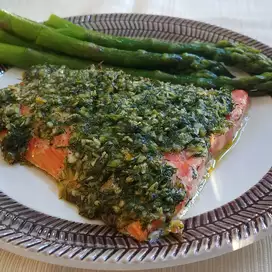

Garlic And Dill Salmon

Description
This meal is made from the highest quality of salmon found in Valhalla. With
the ingredients that are contained in the garlic, this meal will be delicious
not only for your mouth, but for your body and your eyes too.
Even for those that do not like fish, give this recipe a try and you might
think twice about your hate for this delicious meat coming from the sea.
Ingredients
- 2 salmon filet
- 1 head garlic, peeled
- 1 ounce fresh dill, chopped
- ½ cup olive oil
- 1 teaspoon salt and pepper to taste
Steps
- In a food processor, process garlic to a rough mince, add dill and olive
oil and pulse a few times to combine.
- Lay fish fillets in a baking dish, skin side down. Rub garlic mixture over
fish. Refrigerate for 2 hours.
- Preheat an oven to 375 degrees F (190 degrees C).
- Bake in preheated oven for 15 minutes. Do not overcook.